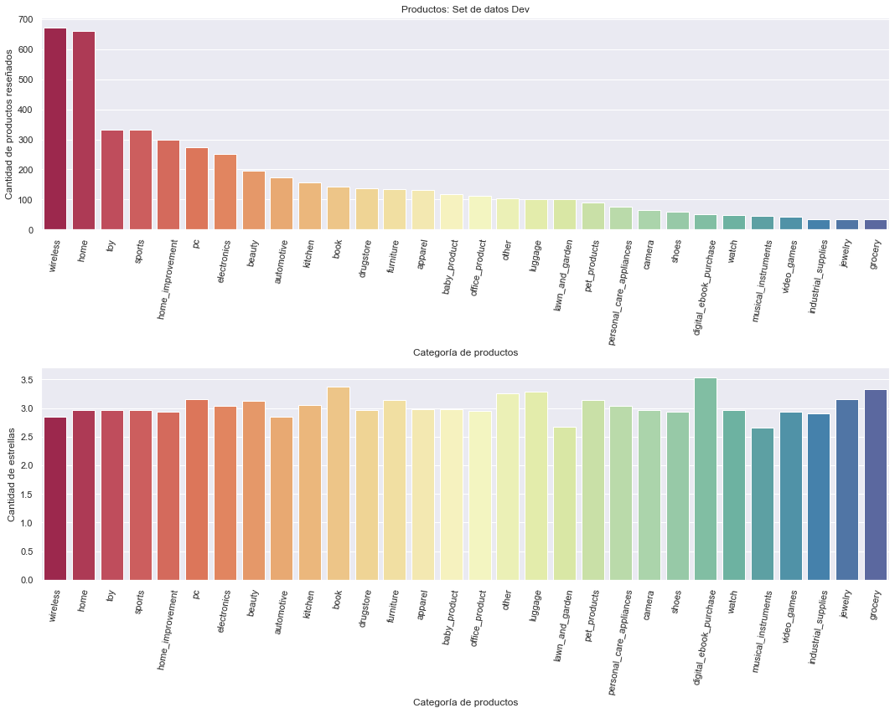
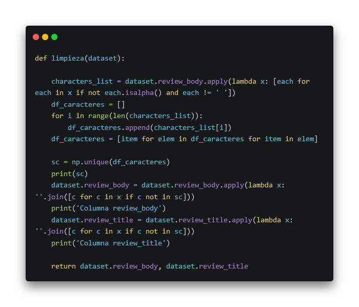
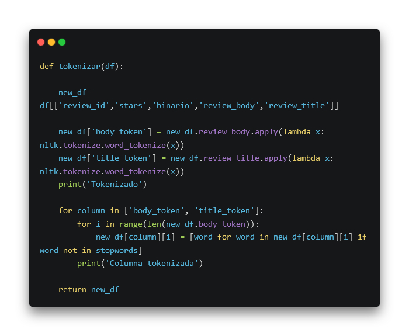

Amazon Reviews, Classification and Rating Predictions
Working with one of my fellow enthusiast Data scientists I evaluated several models to classify the free text Amazon predictions into two classes: positive and negative, and another few models to predict the star rating for these same reviews. This project uses the Multilingual Amazon Reviews Corpus, and the full notebook can be found in this. repo
This dataset provided us with identical dev, test and train files, were the dev and test ones had 5.000 entries each, and the train one had 200.000, plus the star rating classes were perfectly balanced too! This is a peek at what these tables had to offer:

Our average review has 27.5 words in Spanish. To standardize the text, we converted everything to lowercase and removed accents. We labeled reviews as positive (4 and 5 stars) and negative (1, 2, and 3 stars).

The long-honored NLP technique to evaluate a corpus of text by each word. We tokenized out reviews' titles and bodies, but not after having gotten rid of special characters, punctuation marks, misspelt words, numbers and (for now, wink) emojis.

We used the SpaCy library for this part of our project, because of its well known performance in spanish. It was able to take our reviews and classify most word's tokens properly with a few lines of code:
We analyzed word frequency in positive and negative reviews, removing common terms like "quality" and "product" to focus on more meaningful words.
